In this example we consider the flow in a 2D channel past a cylinder with an attached elastic "flag". This is the FSI benchmark problem proposed by Turek & Hron,
The problem combines the two single-physics problems of
- Flow past a cylinder with a "flag" whose motion is prescribed.
- The deformation of a finite-thickness cantilever beam (modelled as a 2D solid), loaded by surface tractions.
This is our first example problem that involves the coupling between a fluid and "proper" solid (rather than beam structure) and also includes both fluid and wall inertia.
The problem presented here was used as one of the test cases for oomph-lib's FSI preconditioner; see
In this tutorial we concentrate on the problem formulation. The application of the preconditioner is discussed elsewhere – the required source code is contained in the driver code.
The Problem
The figure below shows a sketch of the problem: A 2D channel of height 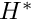 and length 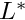 conveys fluid of density 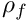 and dynamic viscosity  and contains a cylinder of diameter 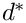, centred at 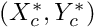 to which a linearly elastic "flag" of thickness 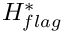 and length 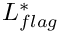 is attached. Steady Poiseuille flow with average velocity 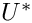 is imposed at the left end of the channel while we assume the outflow to be parallel and axially traction-free. We model the flag as a linearly elastic Hookean solid with elastic modulus 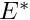, density 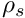 and Poisson's ratio 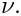
and contains a cylinder of diameter 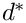, centred at 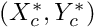 to which a linearly elastic "flag" of thickness 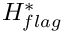 and length 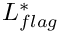 is attached. Steady Poiseuille flow with average velocity 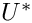 is imposed at the left end of the channel while we assume the outflow to be parallel and axially traction-free. We model the flag as a linearly elastic Hookean solid with elastic modulus 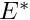, density 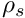 and Poisson's ratio 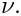

We non-dimensionalise all length and coordinates on the diameter of the cylinder, , the velocities on the mean velocity, , and the fluid pressure on the viscous scale. To facilitate comparisons with Turek & Hron's dimensional benchmark data (particularly for the period of the self-excited oscillations), we use a timescale of 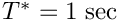 to non-dimensionalise time. The fluid flow is then governed by the non-dimensional Navier-Stokes equations
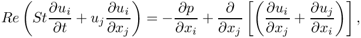
where  and 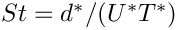, and
and 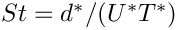, and
![\[ \frac{\partial u_i}{\partial x_i} = 0, \]](form_16.png)
subject to parabolic inflow
![\[ {\bf u} = 6 x_2 (1-x_2) {\bf e}_1 \]](form_17.png)
at the inflow cross-section; parallel, axially-traction-free outflow at the outlet; and no-slip on the stationary channel walls and the surface of the cylinder,  . The no-slip condition on the moving flag is
. The no-slip condition on the moving flag is
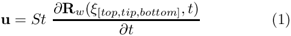
where ![$ \xi_{[top,tip,bottom]} $](form_20.png) are Lagrangian coordinates parametrising the three faces of the flag.
are Lagrangian coordinates parametrising the three faces of the flag.
We describe the deformation of the elastic flag by the non-dimensional position vector 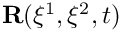 which is determined by the principle of virtual displacements
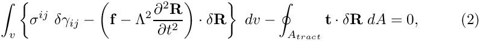
where all solid stresses and tractions have been non-dimensionalised on Young's modulus, ; see the Solid Mechanics Tutorial for details. The solid mechanics timescale ratio (the ratio of the timescale 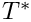 chosen to non-dimensionalise time, to the intrinsic timescale of the solid) can be expressed in terms of the Reynolds and Strouhal numbers, the density ratio, and the FSI interaction parameter as
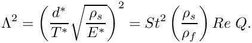
Here is a sketch of the non-dimensional version of the problem:

Parameter values for the benchmark problems
The (dimensional) parameter values given in Turek & Hron's benchmark correspond to the following non-dimensional parameters:
Geometry
- Cylinder diameter 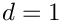
- Centre of cylinder 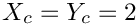
- Channel length 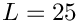
- Channel width 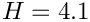
- Thickness of the undeformed flag 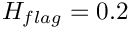
- Right end of undeformed flag 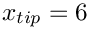
Non-dimensional parameters
The three FSI test cases correspond to the following non-dimensional parameters:
| .. | 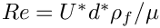 |  | 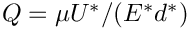 | 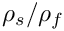 | 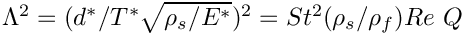 |
| FSI1 | 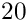 | 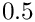 | 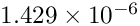 | 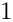 | |
| FSI2 | 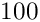 | 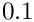 | 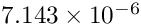 | 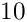 | |
| FSI3 | 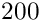 | 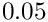 | 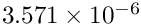 | 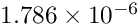 |
Results
The test cases FSI2 and FSI3 are the most interesting because the system develops large-amplitude self-excited oscillations
FSI2
Following an initial transient period the system settles into large-amplitude self-excited oscillations during which the oscillating flag generates a regular vortex pattern that is advected along the channel. This is illustrated in the figure below which shows a snapshot of the flow field (pressure contours and instantaneous streamlines) at 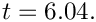

The constantly adapted mesh contains and average of 65,000 degrees of freedom. A relatively large timestep of 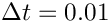 – corresponding to about 50 timesteps per period of the oscillation – was used in this computation. With this discretisation the system settles into oscillations with a period of  and an amplitude of the tip-displacement of 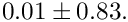
and an amplitude of the tip-displacement of 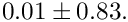

FSI3
The figures below shows the corresponding results for the case FSI3 in which the fluid and solid densities are equal and the Reynolds number twice as large as in the FSI2 case. The system performs oscillations of much higher frequency and smaller amplitude. This is illustrated in the figure below which shows a snapshot of the flow field (pressure contours and instantaneous streamlines) at 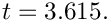

This computation was performed with a timestep of 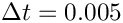 and resulted in oscillations with a period of and an amplitude of the tip-displacement of 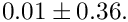
The increase in frequency and Reynolds number leads to the development of thinner boundary and shear layers which require a finer spatial resolution, involving an average of 84,000 degrees of freedom.

Overview of the driver code
Since the driver code is somewhat lengthy we start by providing a brief overview of the main steps in the Problem construction:
- We start by discretising the flag with 2D solid elements, as in the corresponding single-physics solid mechanics example.
- Next we attach
FSISolidTractionElementsto the three solid mesh boundaries that are exposed to the fluid traction. These elements are used to compute and impose the fluid traction onto the solid elements, using the flow field from the adjacent fluid elements.
- We now combine the three sets of
FSISolidTractionElementsinto three individual (sub-)meshes and convert these toGeomObjects, using theMeshAsGeomObjectclass.
- The
GeomObjectrepresentation of the three surface meshes is then passed to the constructor of the fluid mesh. The algebraic node-update methodology provided in theAlgebraicMeshbase class is used to update its nodal positions in response to the motion of its boundingGeomObjects.
- Finally, we use the helper function
FSI_functions::setup_fluid_load_info_for_solid_elements(...)to set up the fluid-structure interaction – this function determines which fluid elements are adjacent to the Gauss points in theFSISolidTractionElementsthat apply the fluid traction to the solid.
- Done!
Parameter values for the benchmark problems
As usual, We use a namespace to define the (many) global parameters, using default assignments for the FSI1 test case.
We also include a gravitational body force for the solid. (This is only used for the solid mechanics test cases, CSM1 and CSM2, which will not be discussed here.)
The domain geometry and flow field are fairly complex and it is difficult to construct a good initial guess for the Newton iteration. To ensure its convergence at the beginning of the simulation we therefore employ the method suggested by Turek & Hron: We start the flow from rest and ramp up the inflow profile from zero to its maximum value. The parameters for the time-dependent increase in the influx are defined here:
Finally, we provide a helper function that assigns the parameters for the various test cases, depending on their ID ("FSI1", "FSI2", "FSI3", "CSM1" or "CSM2"). Here is the assignment for the case FSI1:
In the interest of brevity we omit the listings of the assignments for the other cases. Finally, we select the length of the time interval over which the influx is ramped up from zero to its maximum value to be equal to 20 timesteps, create a constitutive equation for the solid, and document the parameter values used in the simulation:
The driver code
The driver code has the usual structure, though in this case we use the command line arguments to indicate which case (FSI1, FSI2, FSI3, CSM1 or CSM2) to run. The absence of a command line argument is interpreted as the code being run as part of oomph-lib's self-test procedure in which case we perform a computation with the parameter values for case FSI1 and perform only a few timesteps.
We set up the global parameter values, create a DocInfo object and trace file to record the output, and build the problem.
Next, we choose the number of timesteps (using a smaller number for a validation run, and for the case FSI1 in which the system rapidly approaches a steady state) and initialise the time-stepping for an impulsive start from the zero flow solution.
Finally, we document the initial condition and start the time-stepping procedure, setting the first flag to false because we have not specified an analytical expression for the initial conditions that could be re-assigned after the mesh adaptation when computing the first timestep.
The Problem class
The Problem class contains the usual member functions, such as access functions to the various meshes. Because the nodal positions are updated by an algebraic node-update procedure, the function actions_before_newton_convergence_check() is employed to update the nodal positions in response to changes in the (solid) variables during the Newton iteration. The function actions_before_implicit_timestep() is used to adjust the influx during the start-up period.
The problem constructor
We start by building the solid mesh, using an initial discretisation with 20 x 2 elements in the x- and y-directions. (The length of the flag is determined such that it emanates from its intersection with the cylinder and ends at x=6; The origin vector shifts the "lower left" vertex of the solid mesh so that its centreline is aligned with the cylinder.)
We create an error estimator for the solid mesh and identify a control node at the tip of the flag to track its motion.
Finally, we perform one uniform mesh refinement and disable any further mesh adaptation.
Next, we attach FSISolidTractionElements to the boundaries of the solid mesh that are exposed to the fluid. We complete their build by specifying which boundary of the bulk mesh they are attached to, as this information is required when setting up the fluid-structure interaction; see Further comments and exercises.
Finally, we create GeomObject representations of the three surface meshes of FSISolidTractionElements. We will use these to represent the curvilinear, moving boundaries of the fluid mesh.
The final mesh to be built is the fluid mesh whose constructor requires pointers to the four GeomObjects that represent the cylinder and three fluid-loaded faces of the flag, respectively. We represent the cylinder by a Circle object:
We build the mesh and identify a control node (a node at the upstream face of the cylinder), before creating an error estimator and performing one uniform mesh refinement.
We now add the various meshes to the Problem's collection of sub-meshes and combine them to a global mesh
The application of boundary conditions for the solid are straightforward: All displacements of the flag's left end (mesh boundary 3) are suppressed; the other faces are free. Strictly speaking, the pinning of the redundant solid pressure nodes is superfluous since the RefineableQPVDElement used for the discretisation of the flag employ a displacement-based formulation, but it is good practise to perform this step anyway to "future-proof" the code for the use of other element types.
The fluid has Dirichlet boundary conditions (prescribed velocity) everywhere apart from the outflow where only the horizontal velocity is unknown.
We impose a parabolic inflow profile with the current value of the influx at the inlet (fluid mesh boundary 3).
We complete the build of the solid elements by passing them the pointer to the constitutive equation, the gravity vector and the timescale ratio:
The fluid elements require pointers to the Reynolds and Womersley (product of Reynolds and Strouhal) numbers:
Setting up the fluid-structure interaction is done from "both" sides" of the fluid-solid interface: First we ensure that the no-slip condition is automatically applied to all fluid nodes that are located on the three faces of the flag (mesh boundaries 5, 6 and 7). This is done by passing the function pointer to the <br> \c FSI_functions::apply_no_slip_on_moving_wall() function to the relevant fluid nodes (<A href="../../../navier_stokes/osc_ellipse/html/index.html">recall</A> that the auxiliary node update functions are automatically executed whenever the position of a node is updated by the algebraic node update). Since the no-slip condition (1) involves the Strouhal number (which, in the current problem, is not equal to the default value of \c FSI_functions::Strouhal_for_no_slip=1.0), we overwrite the default assignment with the actual Strouhal number in the problem. \until // done automatic application of no-slip Next, we set up the lookup schemes required by the \c FSISolidTractionElements to establish which fluid elements affect the traction onto the solid: \until } All interactions have now been specified and we conclude by assigning the equation numbers \skipline // Assign equation numbers \until //end_of_constructor <HR> <HR> @section set_traction Create traction elements This is a helper function that attaches \c FSISolidTractionElement to the solid elements that are exposed to the fluid traction. We store the elements in three distinct sub-meshes – one for each face. (Yet another mesh, pointed to by \c Combined_traction_mesh_pt, is created for post-processing purposes.) \skipline start_of_create_traction_elements \until // end of create_traction_elements <HR> <HR> @section check Actions before Newton convergence check The algebraic node-update procedure updates the positions in response to changes in the solid displacements but this is not done automatically when the Newton solver updates the solid mechanics degrees of freedom. We therefore force a node-update before the Newton convergence check. \dontinclude turek_flag.cc \skipline start_of_actions_before_newton_convergence_check \until } <HR> <HR> @section timestep Actions before the timestep Before each timestep we update the inflow profile for all fluid nodes on mesh boundary 3. \skipline start_of_actions_before_implicit_timestep \until end_of_actions_before_implicit_timestep <HR> <HR> @section after_adapt Actions after adapt After each adaptation, we unpin and re-pin all redundant pressures degrees of freedom. This is necessary because their "redundant-ness" may have been altered by changes in the refinement pattern; see <A href="../../../navier_stokes/adaptive_driven_cavity/html/index.html"> another tutorial</A> for details. We ensure the automatic application of the no-slip condition on fluid nodes that are located on the faces of the flag, and re-setup the FSI lookup scheme that tells \c FSISolidTractionElements which fluid elements are located next to their Gauss points. \skipline actions_after_adapt \until end of actions_after_adapt <HR> <HR> @section doc Post-processing The function \c doc_solution(...) produces the output for the fluid, solid and traction meshes and writes selected data to the trace file. \skipline start_of_doc_solution \until end_of_doc_solution <HR> <HR> @section com_ex Further comments and exercises - When completing the build of the \c FSISolidTractionElements (the elements that apply the fluid traction to the solid elements that are exposed to the fluid) we specified the number of the solid mesh boundary they are located on, using \n\n @code elem_pt->set_boundary_number_in_bulk_mesh(bound); \endcode \n This information is required when setting up the fluid-structure interaction because the \c MeshAsGeomObject representation of the mesh of \c FSISolidTractionElements is parametrised by the boundary coordinate in the solid mesh. Explore the details of the implementation by commenting out the relevant line of code and use the debugger to find out how and where the code fails. \b Note: Since this step is somewhat subtle and therefore easily forgotten, the \c FSISolidTractionElements issue an explicit warning if the bulk boundary number has not been set – but only if the the library is compiled in PARANOID mode. \n\n - When comparing our results against those in Turek & Hron's benchmark, we only focused on the period and amplitude of the fully-developed self-excited oscillations. The benchmark data also provides data on the time-dependent variations of the drag and lift coefficients. Design suitable \c FaceElements (to be attached to the faces of the Navier-Stokes elements that are adjacent to the flag or the cylinder) to compute these quantities. The <a href="../../../the_data_structure/html/classoomph_1_1NavierStokesSurfacePowerElement.html"> <code>NavierStokesSurfacePowerElements</code></a> should provide a good basis for these. <HR> <HR> @section ackn Acknowledgements - This code was originally developed by Stefan Kollmannsberger and his students Iason Papaioannou and <br> Orkun Oezkan Doenmez. It was completed by Floraine Cordier. <HR> <HR> @section sources Source files for this tutorial - The source files for this tutorial are located in the directory:\n\n <CENTER> <A href="../../../../demo_drivers/interaction/turek_flag/"> demo_drivers/interaction/turek_flag/ </A> </CENTER>\n - The driver code is: \n\n <CENTER> <A href="../../../../demo_drivers/interaction/turek_flag/turek_flag.cc"> demo_drivers/interaction/turek_flag/turek_flag.cc </A> </CENTER> <hr> <hr> @section pdf PDF file A <a href="../latex/refman.pdf">pdf version of this document is available.